library(data.table)
library(emmeans)
source('code/data_fetch.R')
source('code/data_cleaning.R')
source ('code/plotting.R')
source('code/transforms.R')
source('code/helper_functions.R')
library(rpart)
library(correlation)
library(car)
library(glmnet)
library(lmtest)
library(ggeffects)
library(sandwich)
library(splines)
library(recipes)
library(tidymodels)
library(xgboost)Linear Regression
Imports
First, we create the plots for the introduction
plot_line(
time_series,
'num_private_cars',
'Total Number Of Privately Owned Cars',
'Number Of Privately Owned Cars Over Time'
)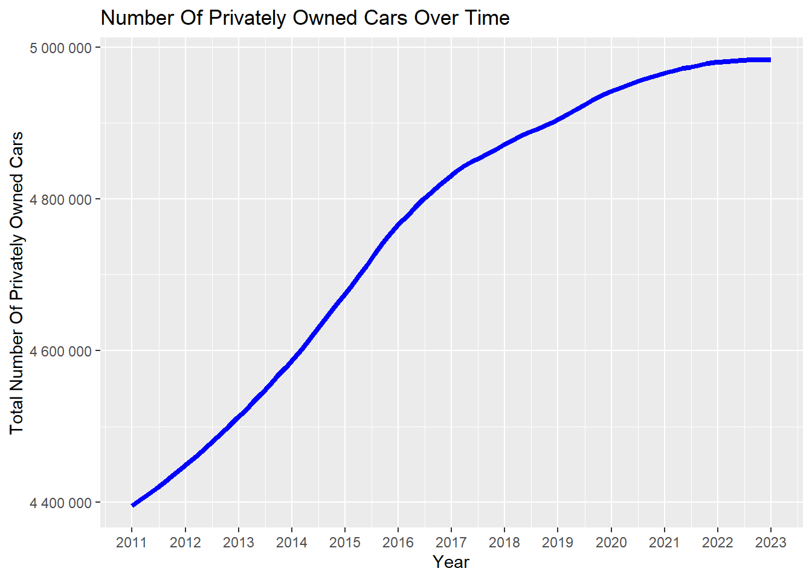
plot_line(
time_series,
'population',
'Population',
'Population Over Time'
)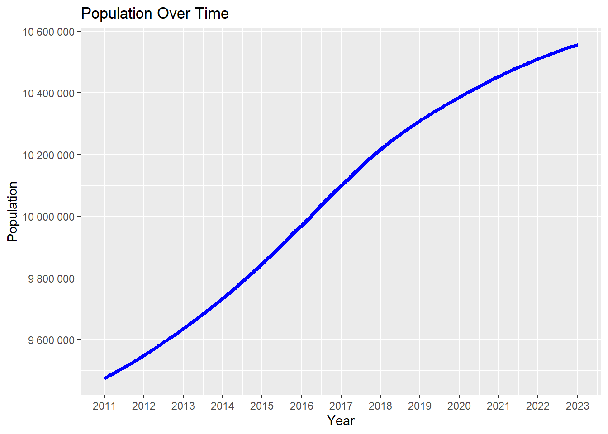
plot_line(
time_series,
'median_inc_tkr',
'Median Yearly Income (kSEK)',
'Median Yearly Income Over Time'
)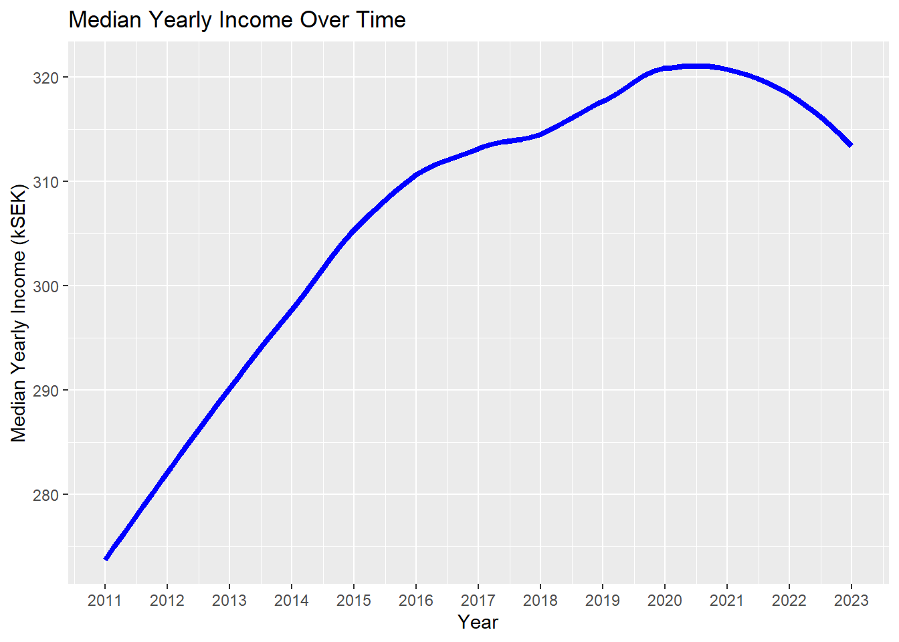
names(df)NULLTrain, Val, Test splitting
df <- copy(clean_car_data)
set.seed(42)
train_frac <- 0.7
val_frac <- 0.15
test_frac <- 0.15
df <- df |> sample_frac(1)
n <- nrow(df)
train_idx <- 1:floor(train_frac * n)
val_idx <- (max(train_idx) + 1):(max(train_idx) + floor(val_frac * n))
test_idx <- setdiff(1:n, c(train_idx, val_idx))
train_set <- df[train_idx, ]
val_set <- df[val_idx, ]
test_set <- df[test_idx, ]
train_set
val_set
test_setExploratory Data Analysis
Univariate- and target interaction Analysis
Numerical variables
Försäljningspris
Let’s look at the distribution of values
plot_numerical_column(train_set,'Försäljningspris',20)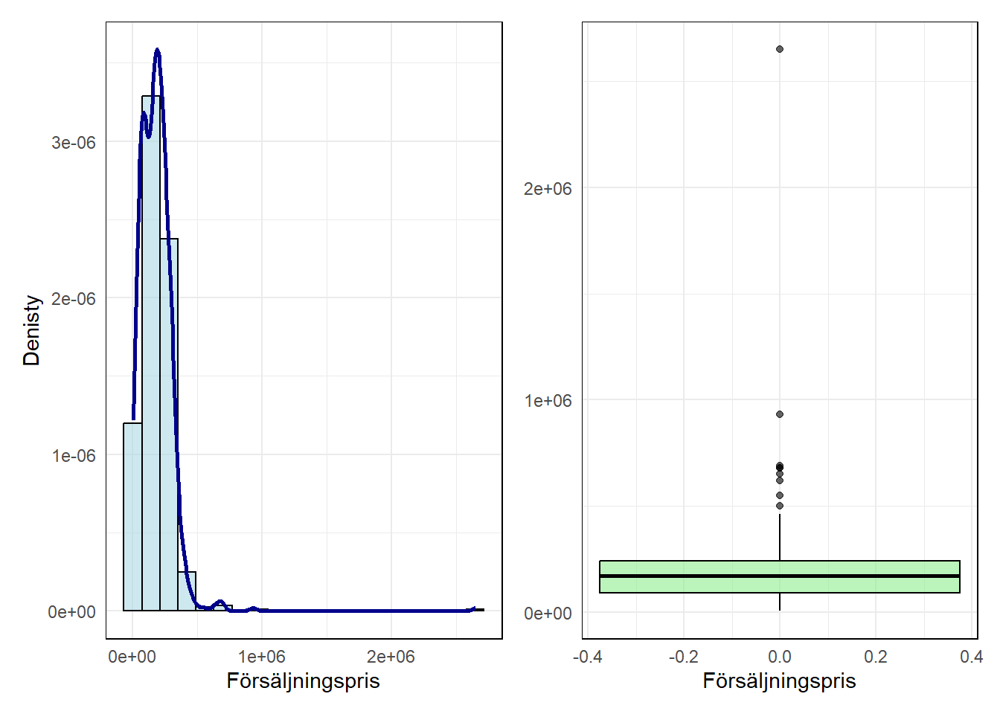
That doesn’t look too nice. Let’s find the extreme outlier and remove it (It’s a rally car,so it’s reasonable to remove that observation). Log transforming the target will also help.
train_set <- train_set |>
filter(
Försäljningspris < 500000
) |>
mutate(
Försäljningspris = log(Försäljningspris)
)
plot_numerical_column(train_set,'Försäljningspris',20)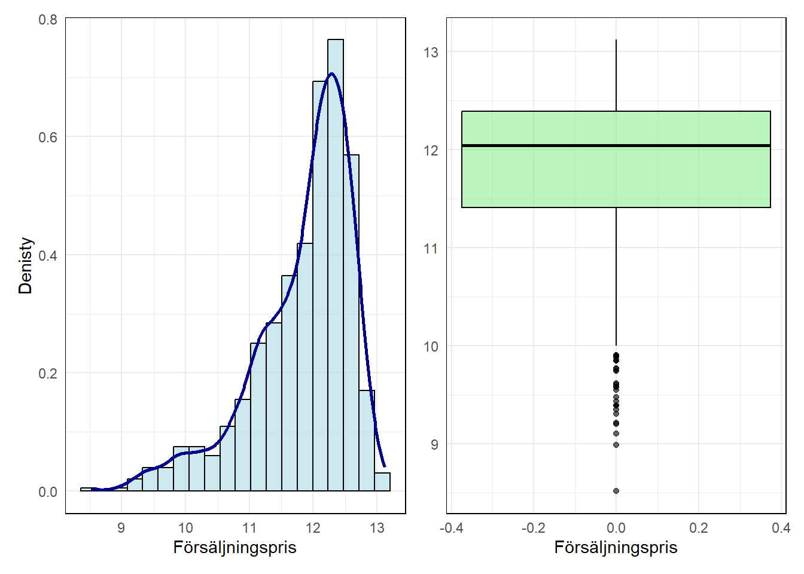
Miltal
Let’s have a look at the distribution
plot_numerical_column(train_set,'Miltal',20)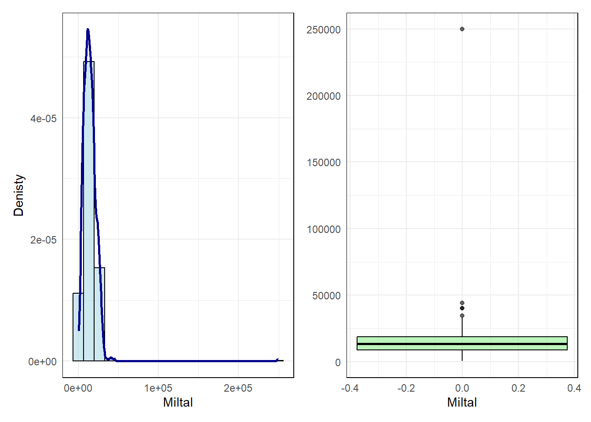
Here too is an extreme outlier. The price associated with it about 36000 so it will mess with the regression if we keep it.Let’s remove it
train_set <- train_set |> filter(Miltal < 50000)
plot_numerical_column(train_set,'Miltal',20)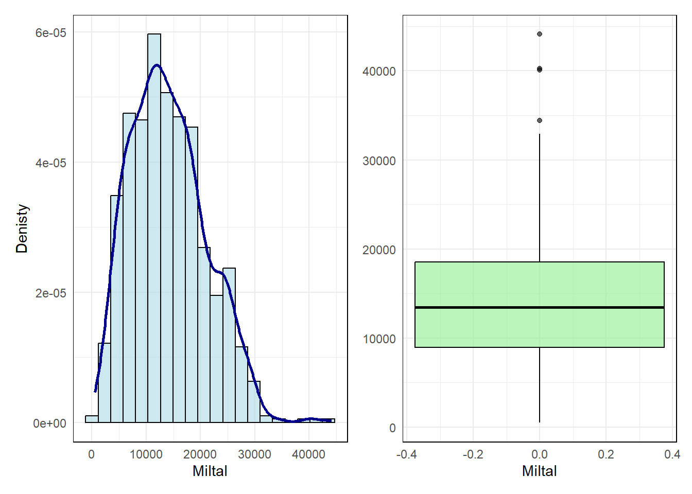
Let’s check how it interacts with the target
plot_numerical_target_interaction(train_set,'Miltal','Försäljningspris')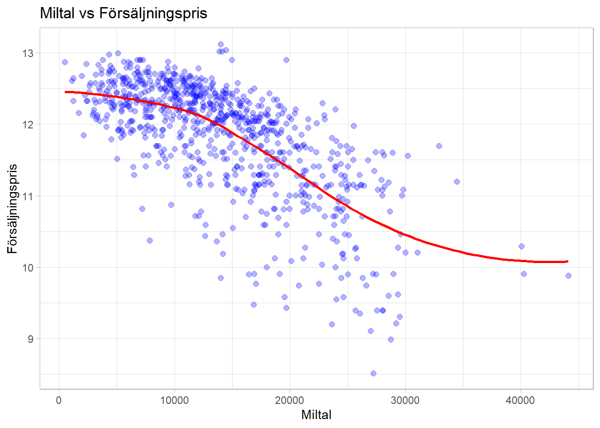
This clear relationship is somewhat nonlinear. We may have to use splines splines for this feature.
Modellår
Let’s have a look at the distribution.
plot_numerical_column(train_set,'Modellår',20)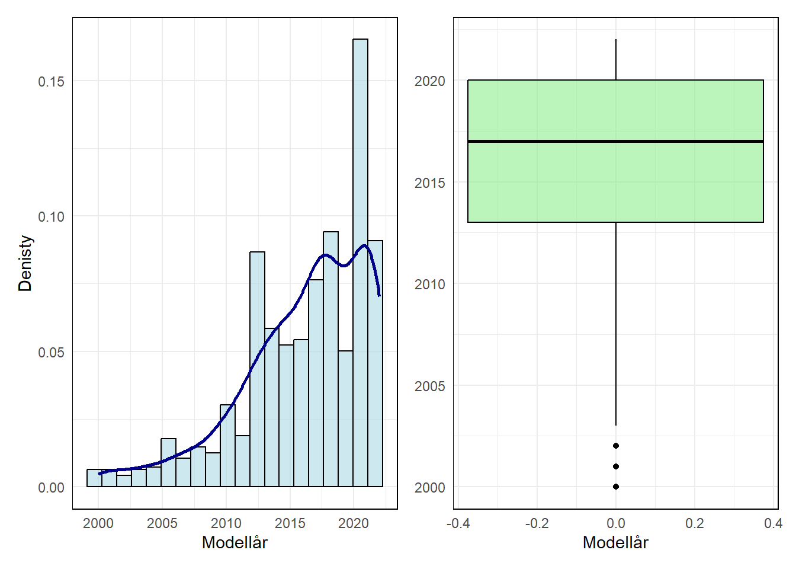
Looks pretty good. Let’s check how it interacts with the target
plot_numerical_target_interaction(train_set,'Modellår','Försäljningspris')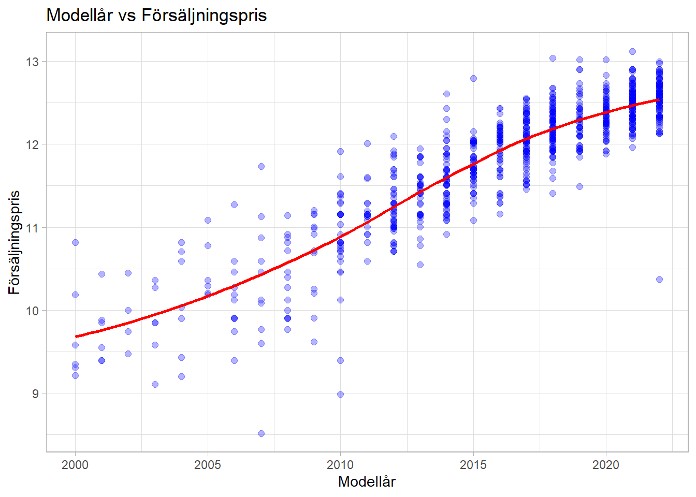
This variable too shows some nonlinearity. Moreover, judging by the plot, there seems to be rather few observations before 2010. Let’s check this.
train_set |> filter(Modellår <= 2010)# A tibble: 111 × 12
Försäljningspris Säljare Bränsle Växellåda Miltal Modellår Biltyp Drivning
<dbl> <fct> <fct> <fct> <dbl> <dbl> <fct> <fct>
1 9.39 Privat Bensin Manuell 28027 2001 Halvk… Tvåhjul…
2 11.1 Privat Diesel Manuell 23298 2008 SUV Fyrhjul…
3 10.1 Privat Miljöbrän… Manuell 21166 2007 Famil… Tvåhjul…
4 9.77 Privat Bensin Manuell 17034 2007 Halvk… Tvåhjul…
5 9.90 Privat Bensin Manuell 16900 2006 Halvk… Tvåhjul…
6 10.9 Företag Bensin Manuell 16598 2009 Halvk… Tvåhjul…
7 10.8 Företag Bensin Manuell 7184 2000 Halvk… Tvåhjul…
8 9.21 Privat Bensin Manuell 29214 2000 Halvk… Tvåhjul…
9 9.39 Privat Diesel Automat 25660 2010 Kombi Tvåhjul…
10 9.90 Företag Bensin Manuell 25031 2006 Halvk… Fyrhjul…
# ℹ 101 more rows
# ℹ 4 more variables: `Hästkrafter (HK)` <dbl>, Färg <fct>, Modell <fct>,
# Region <fct>Only about 100 observations to cover ten years worth of Försäljningspris. That’s a small proportion of the data to cover almost half of the number of years in the data. We will probably get a better model if we lower our ambitions and restrict the data to contain only observations with modellår no less than 2011.
train_set <- train_set |> filter(Modellår > 2010)Let’s plot target interaction again
plot_numerical_target_interaction(train_set,'Modellår','Försäljningspris')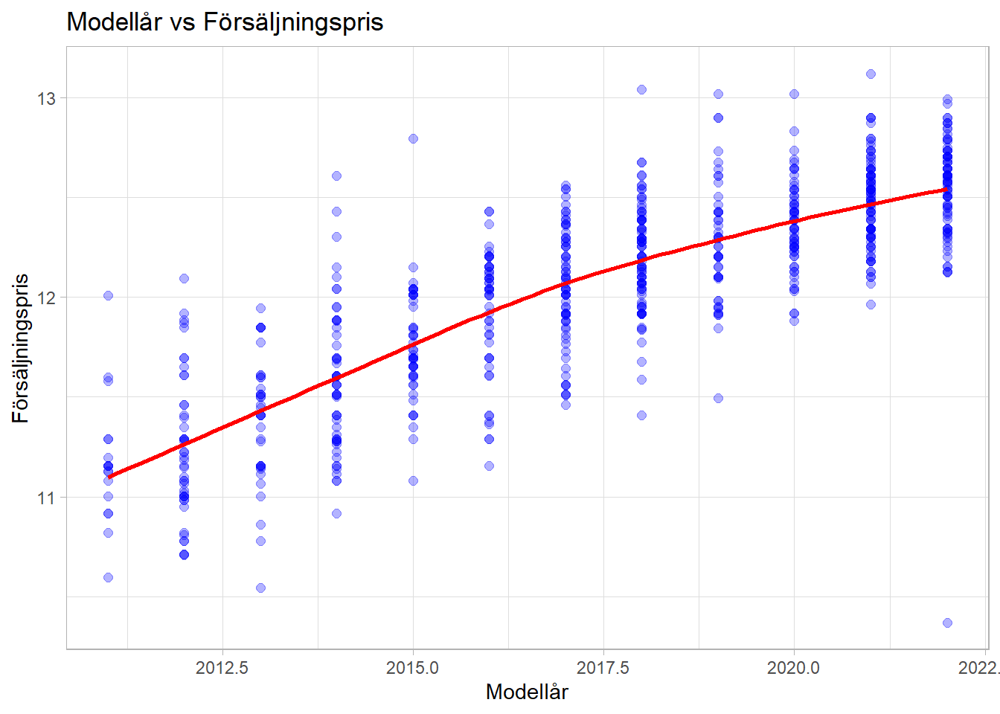
Still some linearity but better than before.
Hästkrafter (HK)
Looking at the distribution
plot_numerical_column(train_set,'Hästkrafter (HK)',20)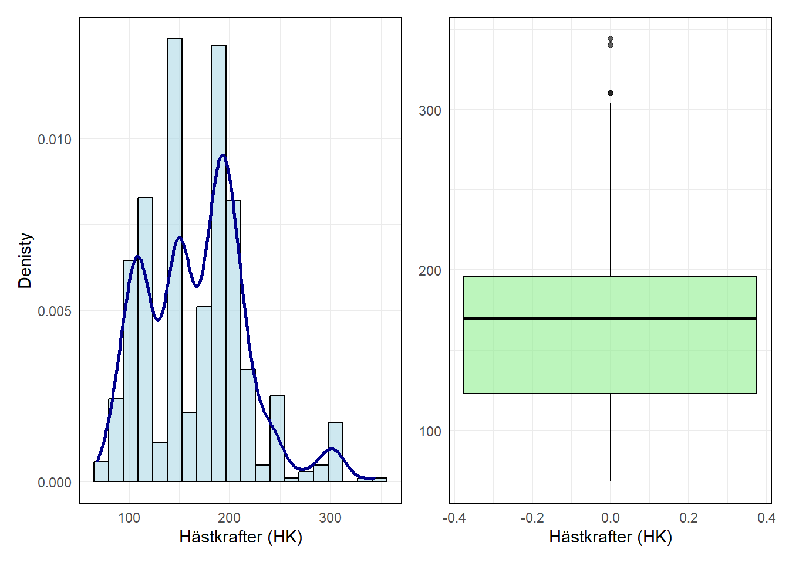
There are a few outliers here but they are probably informative. We keep them for now. Let’s check the interaction with the target.
plot_numerical_target_interaction(train_set,'Hästkrafter (HK)','Försäljningspris')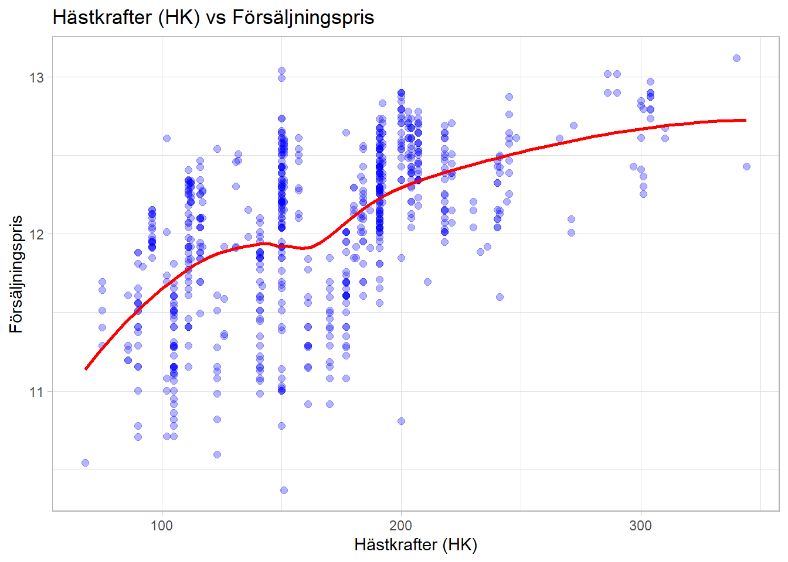
This feature is non-linear. Splines will have to be used.
Categorical variables
Bränsle
plot_categorical_column(train_set,'Bränsle')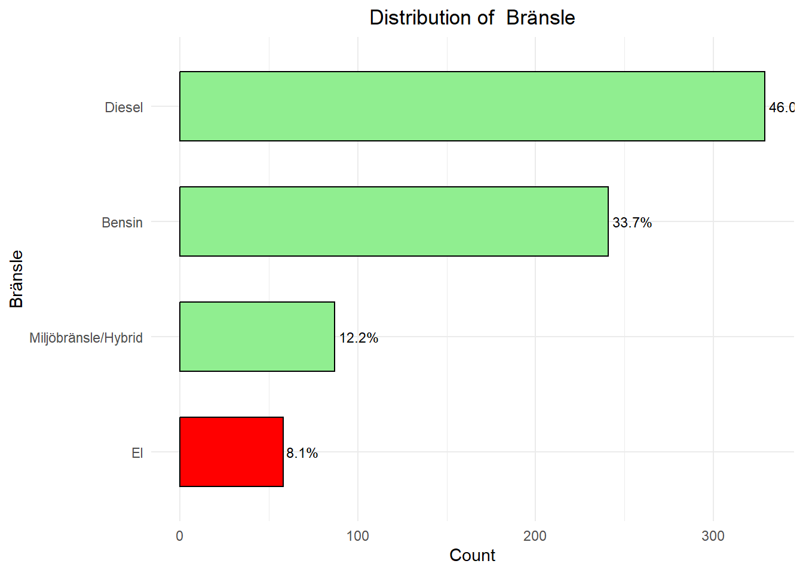
El is a rare category.Let’s see if it has a significantly different Försäljningspris
model <- lm(Försäljningspris ~ Bränsle, data = train_set)
emmeans(model, pairwise ~ Bränsle)$emmeans
Bränsle emmean SE df lower.CL upper.CL
Bensin 12.00 0.0316 711 11.94 12.06
Diesel 12.01 0.0270 711 11.96 12.06
El 12.52 0.0644 711 12.39 12.65
Miljöbränsle/Hybrid 12.06 0.0526 711 11.96 12.17
Confidence level used: 0.95
$contrasts
contrast estimate SE df t.ratio p.value
Bensin - Diesel -0.00791 0.0416 711 -0.190 0.9976
Bensin - El -0.51802 0.0717 711 -7.223 <.0001
Bensin - (Miljöbränsle/Hybrid) -0.06160 0.0613 711 -1.004 0.7469
Diesel - El -0.51011 0.0698 711 -7.305 <.0001
Diesel - (Miljöbränsle/Hybrid) -0.05369 0.0591 711 -0.908 0.8005
El - (Miljöbränsle/Hybrid) 0.45642 0.0831 711 5.491 <.0001
P value adjustment: tukey method for comparing a family of 4 estimates It does seem like we hould keep El separate. Let’s keep see if three categories works.
train_set <- high_cardinality_to_low(train_set,'Bränsle','Försäljningspris',desired_cardinality = 3)
plot_categorical_column(train_set,'Bränsle')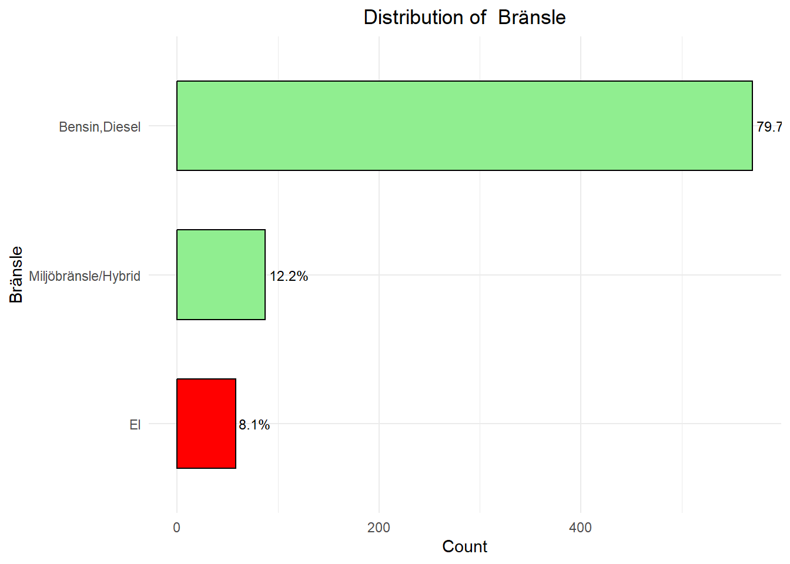
Let’s check differences in Försäljningspris distribution again.
model <- lm(Försäljningspris ~ Bränsle, data = train_set)
emmeans(model, pairwise ~ Bränsle)$emmeans
Bränsle emmean SE df lower.CL upper.CL
Bensin,Diesel 12.01 0.0205 712 11.97 12.05
El 12.52 0.0643 712 12.39 12.65
Miljöbränsle/Hybrid 12.06 0.0525 712 11.96 12.17
Confidence level used: 0.95
$contrasts
contrast estimate SE df t.ratio p.value
Bensin,Diesel - El -0.513 0.0675 712 -7.603 <.0001
Bensin,Diesel - (Miljöbränsle/Hybrid) -0.057 0.0564 712 -1.011 0.5700
El - (Miljöbränsle/Hybrid) 0.456 0.0831 712 5.495 <.0001
P value adjustment: tukey method for comparing a family of 3 estimates Not quite but we’ll leave it as is for now. Let’s plot the interaction with the target
plot_categorical_target_interaction(train_set,'Bränsle')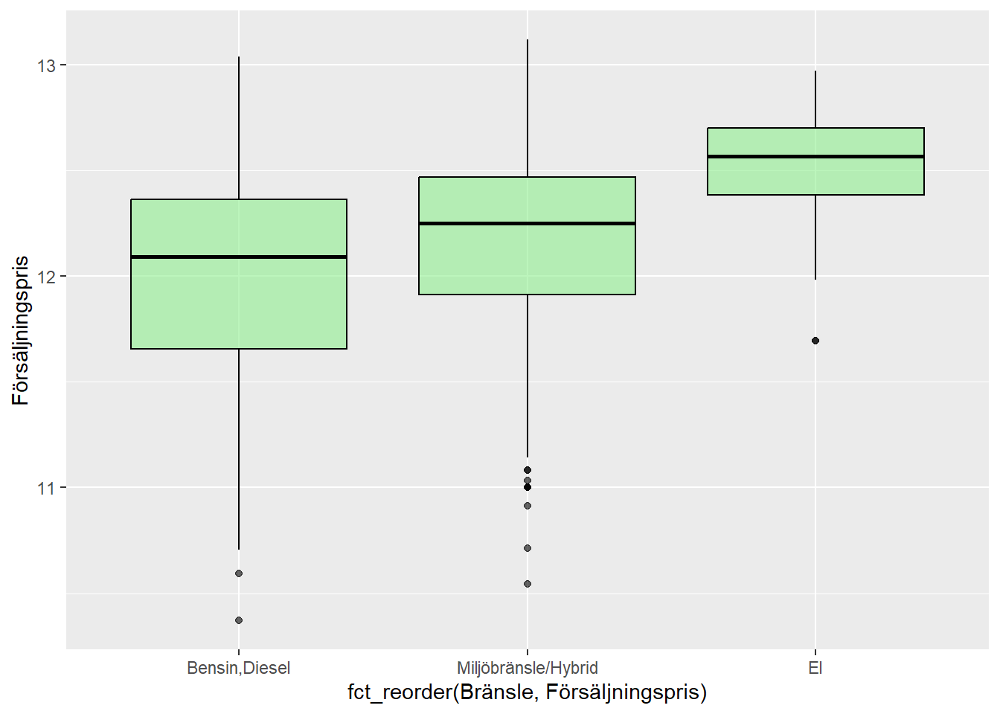
Växellåda
plot_categorical_column(train_set,'Växellåda')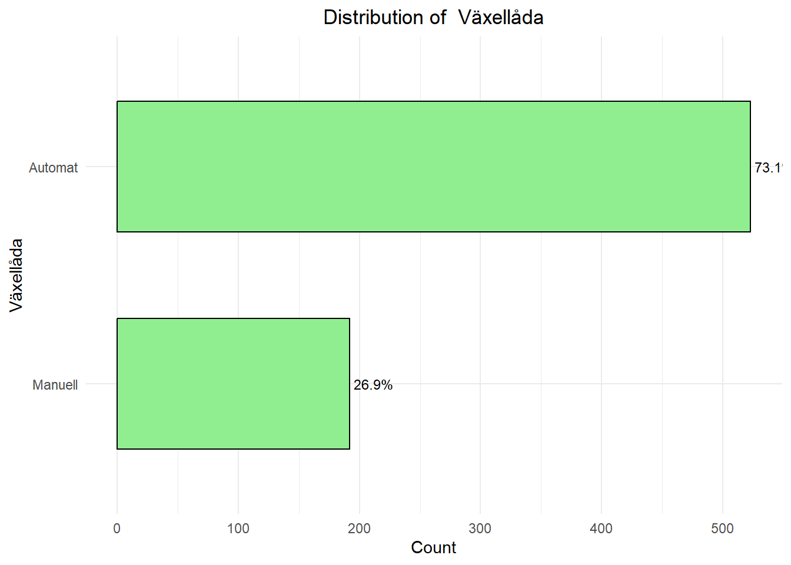
model <- lm(Försäljningspris ~ Växellåda, data = train_set)
emmeans(model, pairwise ~ Växellåda)$emmeans
Växellåda emmean SE df lower.CL upper.CL
Automat 12.22 0.0188 713 12.18 12.26
Manuell 11.61 0.0311 713 11.55 11.67
Confidence level used: 0.95
$contrasts
contrast estimate SE df t.ratio p.value
Automat - Manuell 0.611 0.0364 713 16.814 <.0001plot_categorical_target_interaction(train_set,'Växellåda')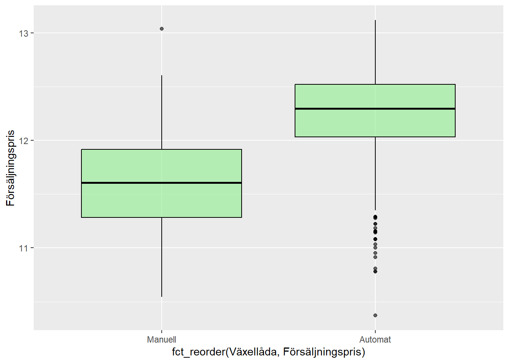
No problems here.
Biltyp
plot_categorical_column(train_set,'Biltyp')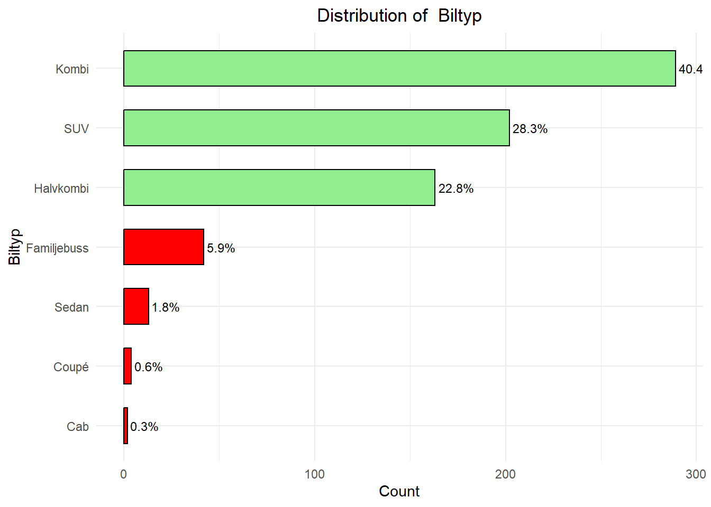
There are several rare types here. Moreover, Familjebuss is a very special category and we will most probably get a better model if we stick with the more common types. Let’s see if we can reduce this to 2 distinct categories and also have significant difference in mean Försäljningspris.
train_set <- train_set |>
filter(!(Biltyp %in% c('Familjebuss','Sedan','Coupé','Cab')))
train_set <- high_cardinality_to_low(train_set,'Biltyp','Försäljningspris',desired_cardinality = 2)
plot_categorical_column(train_set,'Biltyp')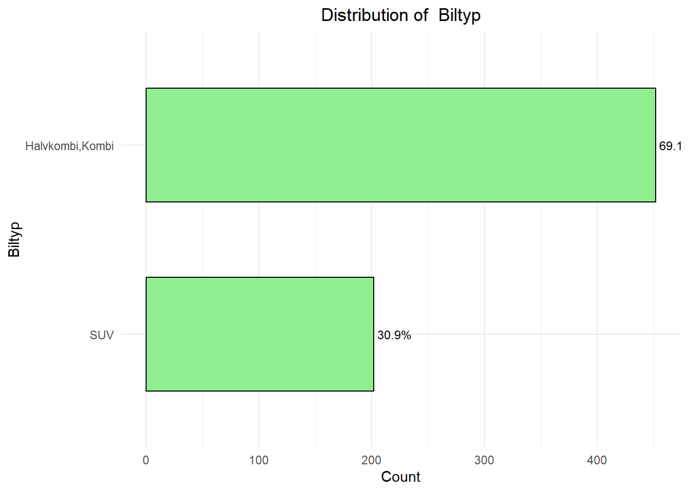
model <- lm(Försäljningspris ~ Biltyp, data = train_set)
emmeans(model, pairwise ~ Biltyp)$emmeans
Biltyp emmean SE df lower.CL upper.CL
Halvkombi,Kombi 11.93 0.0219 652 11.89 11.98
SUV 12.36 0.0327 652 12.30 12.43
Confidence level used: 0.95
$contrasts
contrast estimate SE df t.ratio p.value
Halvkombi,Kombi - SUV -0.431 0.0393 652 -10.968 <.0001plot_categorical_target_interaction(train_set,'Biltyp')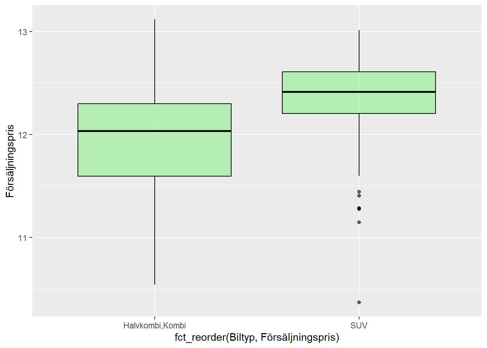
This looks good.
Drivning
plot_categorical_column(train_set,'Drivning')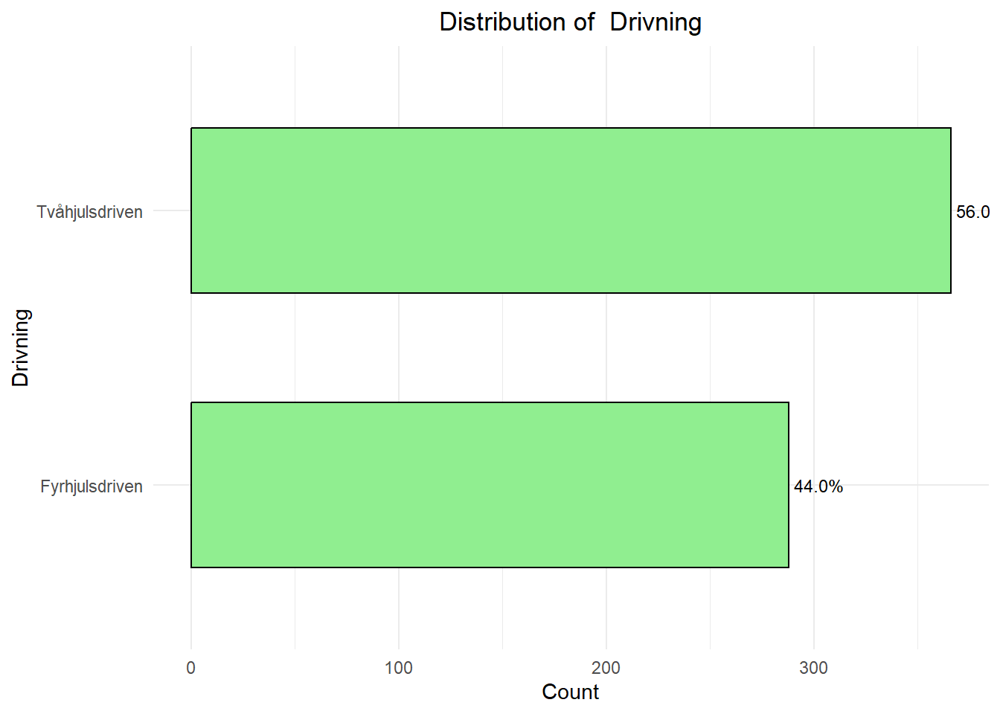
model <- lm(Försäljningspris ~ Drivning, data = train_set)
emmeans(model, pairwise ~ Drivning)$emmeans
Drivning emmean SE df lower.CL upper.CL
Fyrhjulsdriven 12.19 0.0291 652 12.13 12.25
Tvåhjulsdriven 11.97 0.0258 652 11.92 12.02
Confidence level used: 0.95
$contrasts
contrast estimate SE df t.ratio p.value
Fyrhjulsdriven - Tvåhjulsdriven 0.224 0.0389 652 5.763 <.0001plot_categorical_target_interaction(train_set,'Drivning')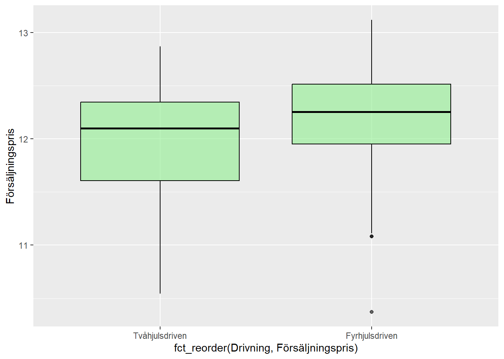
No problems here.
Färg
plot_categorical_column(train_set,'Färg')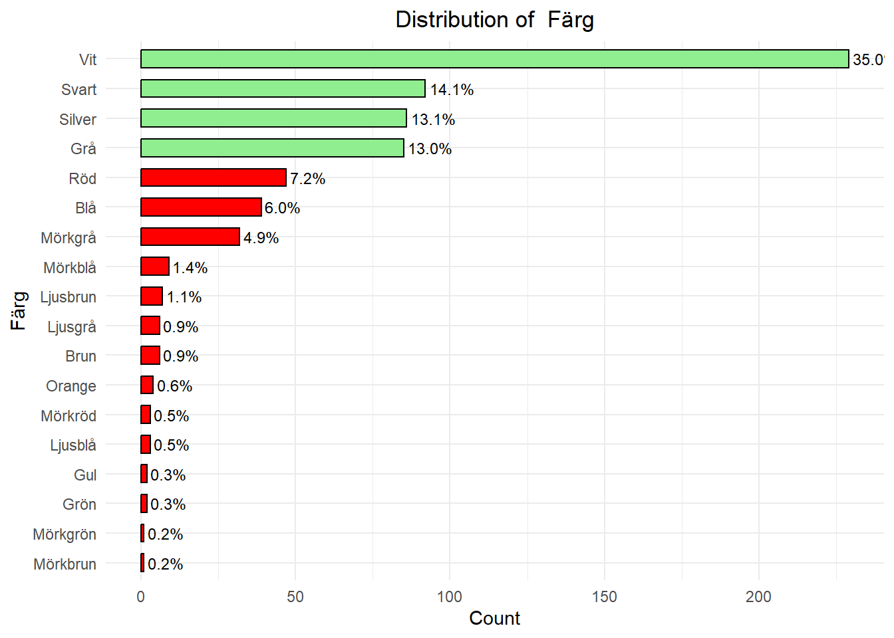
This is a problematic feature. There is a high number of categories and most of them are rare. Let’s see if we can reduce the number categories to three and also have significantly different means for Försäljningspris
train_set <- high_cardinality_to_low(
train_set,'Färg',
'Försäljningspris',
desired_cardinality = 3
)
model <- lm(Försäljningspris ~ Färg, data = train_set)
emmeans(model, pairwise ~ Färg)$emmeans
Färg emmean
Blå,Grå,Grön,Gul,Mörkblå,Mörkgrå,Mörkgrön,Mörkröd,Orange,Svart,Vit 12.15
Brun,Ljusgrå,Mörkbrun 11.52
Ljusblå,Ljusbrun,Röd,Silver 11.84
SE df lower.CL upper.CL
0.0217 651 12.10 12.19
0.1340 651 11.25 11.78
0.0405 651 11.76 11.92
Confidence level used: 0.95
$contrasts
contrast
Blå,Grå,Grön,Gul,Mörkblå,Mörkgrå,Mörkgrön,Mörkröd,Orange,Svart,Vit - Brun,Ljusgrå,Mörkbrun
Blå,Grå,Grön,Gul,Mörkblå,Mörkgrå,Mörkgrön,Mörkröd,Orange,Svart,Vit - Ljusblå,Ljusbrun,Röd,Silver
Brun,Ljusgrå,Mörkbrun - Ljusblå,Ljusbrun,Röd,Silver
estimate SE df t.ratio p.value
0.629 0.1360 651 4.630 <.0001
0.305 0.0459 651 6.644 <.0001
-0.324 0.1400 651 -2.314 0.0545
P value adjustment: tukey method for comparing a family of 3 estimates plot_categorical_target_interaction(train_set,'Färg')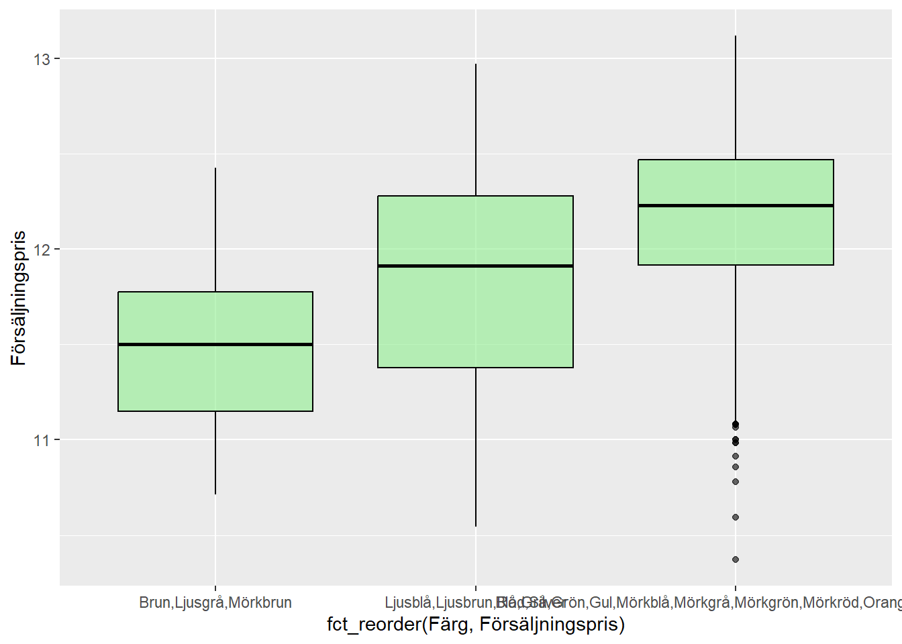
Modell
plot_categorical_column(train_set,'Modell')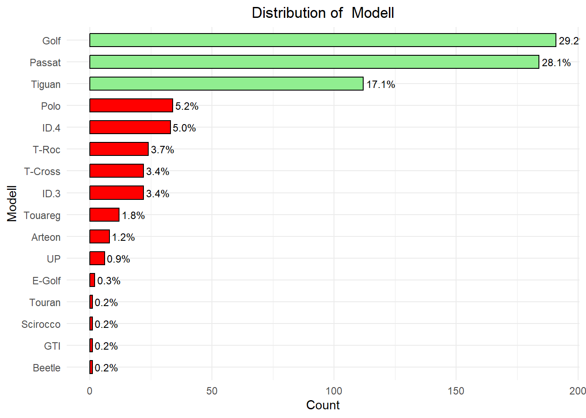
Another problematic column. Let’s see if we can reduce the number of distinct categories to 3 and also also have significantly different means for Försäljningspris.
train_set <- high_cardinality_to_low(train_set,'Modell','Försäljningspris',3)
model <- lm(Försäljningspris ~ Modell, data = train_set)
emmeans(model, pairwise ~ Modell)$emmeans
Modell emmean SE df lower.CL
Arteon,GTI,ID.3,ID.4,T-Cross,T-Roc,Tiguan,Touareg 12.39 0.0282 651 12.34
Beetle,Golf,Polo,Scirocco,Touran,UP 11.77 0.0282 651 11.72
E-Golf,Passat 12.03 0.0317 651 11.96
upper.CL
12.45
11.83
12.09
Confidence level used: 0.95
$contrasts
contrast
(Arteon,GTI,ID.3,ID.4,T-Cross,T-Roc,Tiguan,Touareg) - Beetle,Golf,Polo,Scirocco,Touran,UP
(Arteon,GTI,ID.3,ID.4,T-Cross,T-Roc,Tiguan,Touareg) - (E-Golf,Passat)
Beetle,Golf,Polo,Scirocco,Touran,UP - (E-Golf,Passat)
estimate SE df t.ratio p.value
0.618 0.0399 651 15.470 <.0001
0.367 0.0424 651 8.634 <.0001
-0.252 0.0424 651 -5.925 <.0001
P value adjustment: tukey method for comparing a family of 3 estimates plot_categorical_target_interaction(train_set,'Modell')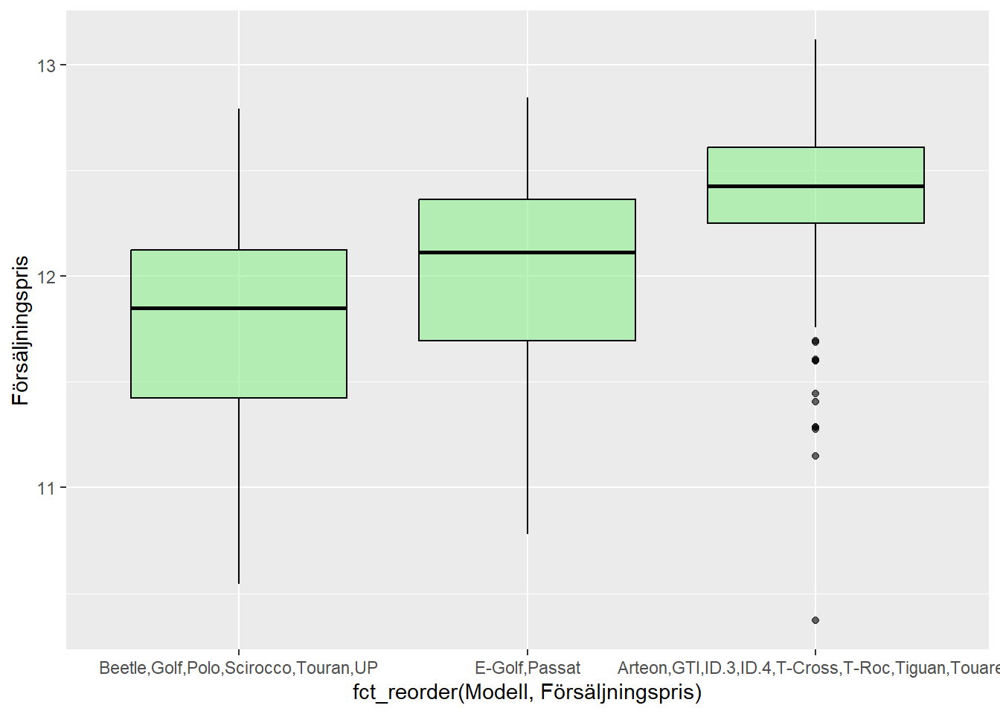
Multivariate analysis
Let’s create an association plot
result <- plot_association_matrix(train_set)
result$plot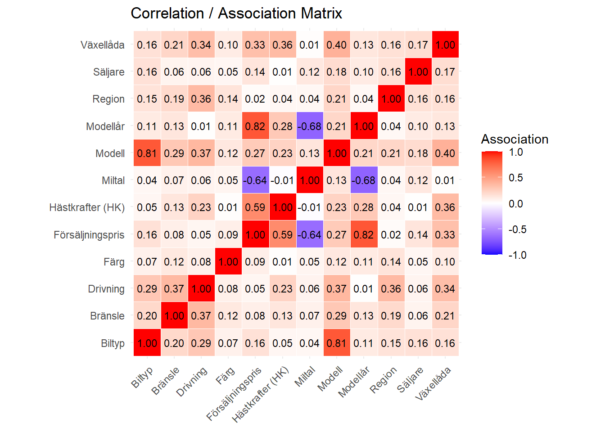
Here we see that:
- The variables most correlated with Försäljningspris are Modellår, Miltal, Hästkrafter (Hk) and Växellåda. Let’s be economical and use only these variables to begin with and see how far that takes us.
- Modellår and Miltal are highly correlated. We’ll keep them both for now and check VIF values.
Inference
Let’s perform scaling
train_set <- train_set |>
mutate(
across(
.cols = where(is.numeric) & !matches("Försäljningspris"),
.fns = ~ scale(.)[,1]
)
)Now let’s train the model and check VIF values
model <- lm(
Försäljningspris ~
bs(Modellår,df=3)+bs(`Hästkrafter (HK)`,df=3)+Växellåda+Miltal,
data = train_set
)
vif(model) GVIF Df GVIF^(1/(2*Df))
bs(Modellår, df = 3) 2.383898 3 1.155796
bs(`Hästkrafter (HK)`, df = 3) 2.109902 3 1.132514
Växellåda 1.986539 1 1.409446
Miltal 2.129874 1 1.459409No problems here. Let’s check the distribution of the residuals.
hist(residuals(model), breaks = 30)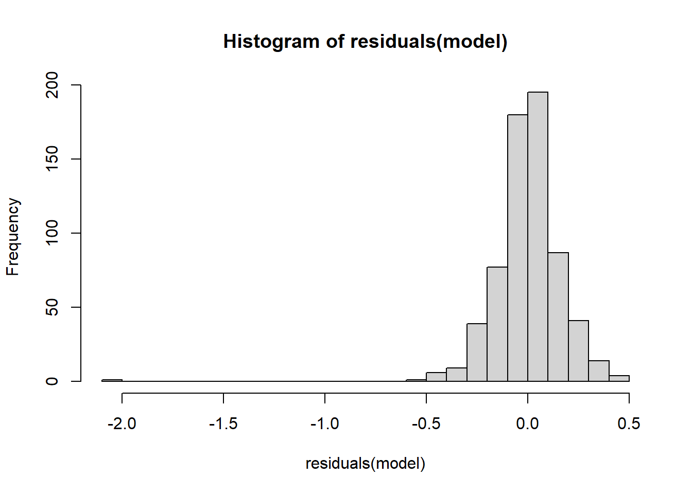
Here we see that there is an observations on the left that messes with the symmetry of the plot. If not for these, the histogram of residuals would look pretty normal. Let’s find out more about these.
residuals <- residuals(model)
threshold <- -1
extreme_left <- which(residuals < threshold)
data.frame(Index = extreme_left, Residual = residuals[extreme_left]) Index Residual
338 338 -2.043964Let’s have a look at observation 338
view_original_observation(338,df,train_set)# A tibble: 1 × 12
Försäljningspris Säljare Bränsle Växellåda Miltal Modellår Biltyp Drivning
<dbl> <fct> <fct> <fct> <dbl> <dbl> <fct> <fct>
1 31900 Företag Diesel Automat 7860 2022 SUV Fyrhjulsdri…
# ℹ 4 more variables: `Hästkrafter (HK)` <dbl>, Färg <fct>, Modell <fct>,
# Region <fct>This is a SUV from 2022 with a low value of 7860 on Miltal with a Försäljningspris of only 31900. Such a low price seems very unlikely for such a new car. This could possibly be due to faulty data collection. We remove this observation as it is a true outlier.
train_set <- train_set[-338,]model <- lm(
Försäljningspris ~
bs(Modellår,df=3)+bs(`Hästkrafter (HK)`,df=3)+Växellåda+Miltal,
data = train_set
)
vif(model) GVIF Df GVIF^(1/(2*Df))
bs(Modellår, df = 3) 2.382868 3 1.155713
bs(`Hästkrafter (HK)`, df = 3) 2.113040 3 1.132795
Växellåda 1.986650 1 1.409486
Miltal 2.128016 1 1.458772hist(residuals(model), breaks = 30)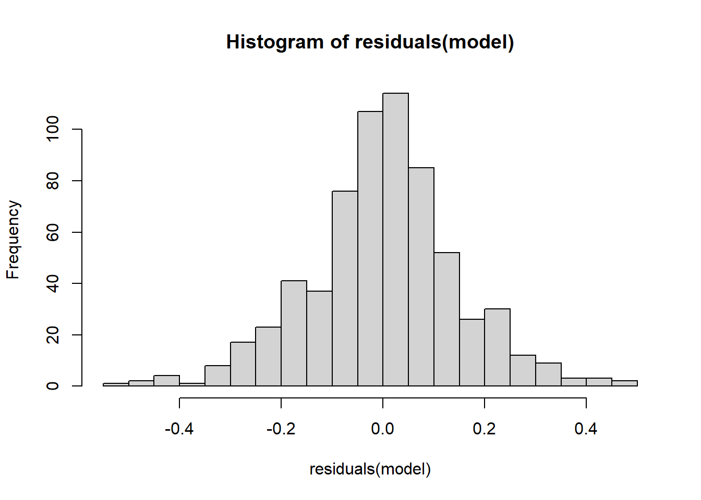
Now the histogram looks much better. Let’s look at residuals vs fitted
plot(model, which = 1)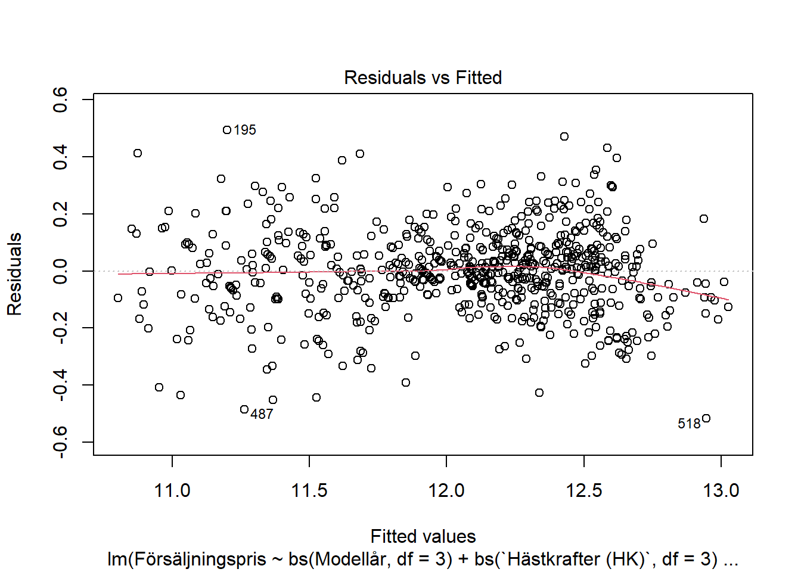
This is how we want this plot to look. A random cloud with no discernible pattern and a mean very close to zero. There are 3 observations that have been flagged. Let’s run a test for autocorrelation and check the mean of the residuals.
dwtest(model)
Durbin-Watson test
data: model
DW = 2.074, p-value = 0.829
alternative hypothesis: true autocorrelation is greater than 0print(glue('Mean residual value: {mean(resid(model))}'))Mean residual value: 1.37443587157986e-17No autocorrelation. That’s good. Let’s have a look at the three flagged observations.
view_original_observation(195,df,train_set)# A tibble: 3 × 12
Försäljningspris Säljare Bränsle Växellåda Miltal Modellår Biltyp Drivning
<dbl> <fct> <fct> <fct> <dbl> <dbl> <fct> <fct>
1 119500 Företag Diesel Automat 20598 2014 Kombi Fyrhjulsdri…
2 120000 Privat Diesel Manuell 32925 2015 Kombi Tvåhjulsdri…
3 119900 Företag Diesel Automat 17400 2014 Kombi Fyrhjulsdri…
# ℹ 4 more variables: `Hästkrafter (HK)` <dbl>, Färg <fct>, Modell <fct>,
# Region <fct>view_original_observation(487,df,train_set)# A tibble: 1 × 12
Försäljningspris Säljare Bränsle Växellåda Miltal Modellår Biltyp Drivning
<dbl> <fct> <fct> <fct> <dbl> <dbl> <fct> <fct>
1 48000 Privat Bensin Automat 28667 2013 Kombi Tvåhjulsdri…
# ℹ 4 more variables: `Hästkrafter (HK)` <dbl>, Färg <fct>, Modell <fct>,
# Region <fct>view_original_observation(518,df,train_set)# A tibble: 2 × 12
Försäljningspris Säljare Bränsle Växellåda Miltal Modellår Biltyp Drivning
<dbl> <fct> <fct> <fct> <dbl> <dbl> <fct> <fct>
1 249900 Företag El Automat 4970 2021 Halvkombi Tvåhjuls…
2 249900 Företag El Automat 7590 2022 Halvkombi Tvåhjuls…
# ℹ 4 more variables: `Hästkrafter (HK)` <dbl>, Färg <fct>, Modell <fct>,
# Region <fct>None of these observations seem to stand out very much. Let’s move on the the Q-Q plot.
plot(model, which = 2)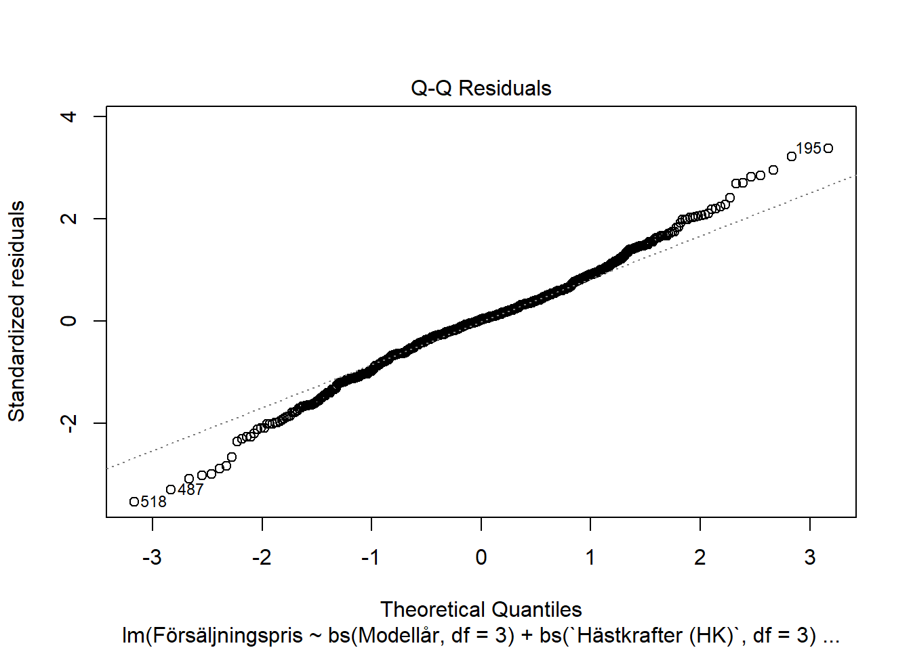
Our three flagged observations are somewhat bothersome. Let’s run a test for normality.
shapiro.test(residuals(model))
Shapiro-Wilk normality test
data: residuals(model)
W = 0.98997, p-value = 0.000196So, we have established that the normality assumption is violated, but it is in all probability due to only a few unusual but valid observations. Let’s move on to plotting the fitted values against the standardized residuals.
plot(model, which = 3)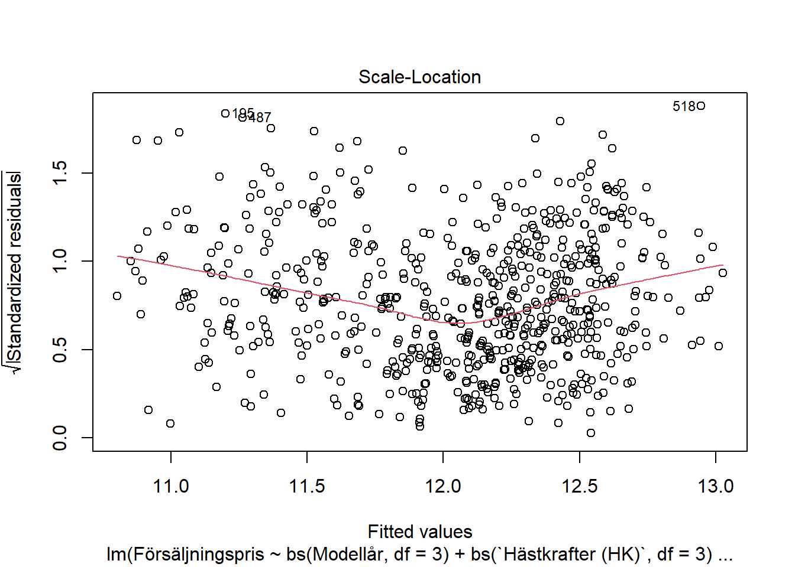
There is a slight U-shape here suggesting some heteroscedasticity. Let’s run a test for it
bptest(model)
studentized Breusch-Pagan test
data: model
BP = 48.274, df = 8, p-value = 8.756e-08The test confirms that there is indeed heteroscedasticity. We therefore decide to use robust standard errors. Let’s move on to checking leverage and Cook’s distance
plot(model, which = 5)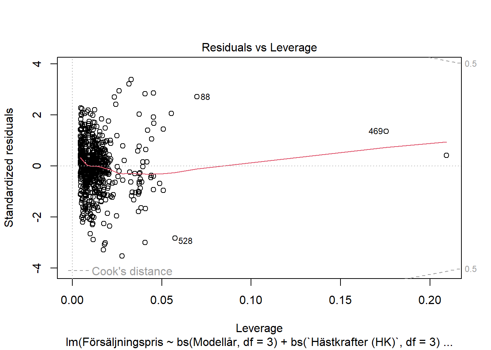
sort(cooks.distance(model), decreasing = TRUE)[1:10] 88 528 469 195 329 456 518
0.06099898 0.05428909 0.04336402 0.04328699 0.04292461 0.04233089 0.03967101
12 94 179
0.03781720 0.03752290 0.02777881 No point exceed a Cook’s distance of 0.5, which is good. We are now ready to check the significance of the coefficients of the predictors and confidence intervals using robust standard errors and a robust F-statistic.
vcov = vcovHC(model, type = "HC1")
coeftest(model, vcov = vcov)
t test of coefficients:
Estimate Std. Error t value Pr(>|t|)
(Intercept) 10.9469895 0.0650974 168.1633 < 2.2e-16 ***
bs(Modellår, df = 3)1 0.3983820 0.0948907 4.1983 3.067e-05 ***
bs(Modellår, df = 3)2 0.7868100 0.0438546 17.9413 < 2.2e-16 ***
bs(Modellår, df = 3)3 0.8066186 0.0526577 15.3181 < 2.2e-16 ***
bs(`Hästkrafter (HK)`, df = 3)1 0.9270175 0.1283776 7.2210 1.460e-12 ***
bs(`Hästkrafter (HK)`, df = 3)2 0.5744170 0.0770293 7.4571 2.868e-13 ***
bs(`Hästkrafter (HK)`, df = 3)3 1.2633866 0.1011803 12.4865 < 2.2e-16 ***
VäxellådaManuell -0.1426279 0.0196717 -7.2504 1.195e-12 ***
Miltal -0.1759534 0.0098576 -17.8496 < 2.2e-16 ***
---
Signif. codes: 0 '***' 0.001 '**' 0.01 '*' 0.05 '.' 0.1 ' ' 1waldtest(model, vcov = vcov, test = "F")Wald test
Model 1: Försäljningspris ~ bs(Modellår, df = 3) + bs(`Hästkrafter (HK)`,
df = 3) + Växellåda + Miltal
Model 2: Försäljningspris ~ 1
Res.Df Df F Pr(>F)
1 644
2 652 -8 634.98 < 2.2e-16 ***
---
Signif. codes: 0 '***' 0.001 '**' 0.01 '*' 0.05 '.' 0.1 ' ' 1coefci(model, vcov = vcov) 2.5 % 97.5 %
(Intercept) 10.8191608 11.0748182
bs(Modellår, df = 3)1 0.2120494 0.5847147
bs(Modellår, df = 3)2 0.7006947 0.8729253
bs(Modellår, df = 3)3 0.7032170 0.9100201
bs(`Hästkrafter (HK)`, df = 3)1 0.6749282 1.1791067
bs(`Hästkrafter (HK)`, df = 3)2 0.4231581 0.7256759
bs(`Hästkrafter (HK)`, df = 3)3 1.0647035 1.4620696
VäxellådaManuell -0.1812564 -0.1039994
Miltal -0.1953102 -0.1565965r2 <- summary(model)$r.squared
adj_r2 <- summary(model)$adj.r.squared
cat('\nR-squared:', round(r2, 4), '\n')
R-squared: 0.9134 cat('\nAdjusted R-squared:', round(adj_r2, 4), '\n')
Adjusted R-squared: 0.9123 Let’s also test the splined variables as a whole for significance
linearHypothesis(
model,
c(
'bs(Modellår, df = 3)1 = 0',
'bs(Modellår, df = 3)2 = 0',
'bs(Modellår, df = 3)3 = 0'
),
vcov = vcov
)
Linear hypothesis test:
bs(Modellår, df = 3)1 = 0
bs(Modellår, df = 3)2 = 0
bs(Modellår, df = 3)3 = 0
Model 1: restricted model
Model 2: Försäljningspris ~ bs(Modellår, df = 3) + bs(`Hästkrafter (HK)`,
df = 3) + Växellåda + Miltal
Note: Coefficient covariance matrix supplied.
Res.Df Df F Pr(>F)
1 647
2 644 3 195.7 < 2.2e-16 ***
---
Signif. codes: 0 '***' 0.001 '**' 0.01 '*' 0.05 '.' 0.1 ' ' 1linearHypothesis(
model,
c(
'bs(`Hästkrafter (HK)`, df = 3)1 = 0',
'bs(`Hästkrafter (HK)`, df = 3)2 = 0',
'bs(`Hästkrafter (HK)`, df = 3)3 = 0'
),
vcov = vcov
)
Linear hypothesis test:
bs(`Hästkrafter (HK)`, df = 3)1 = 0
bs(`Hästkrafter (HK)`, df = 3)2 = 0
bs(`Hästkrafter (HK)`, df = 3)3 = 0
Model 1: restricted model
Model 2: Försäljningspris ~ bs(Modellår, df = 3) + bs(`Hästkrafter (HK)`,
df = 3) + Växellåda + Miltal
Note: Coefficient covariance matrix supplied.
Res.Df Df F Pr(>F)
1 647
2 644 3 154.02 < 2.2e-16 ***
---
Signif. codes: 0 '***' 0.001 '**' 0.01 '*' 0.05 '.' 0.1 ' ' 1Finally, let’s create marginal effect plots for each of the predictors.
train_set_renamed <- train_set |>
rename(Hästkrafter = `Hästkrafter (HK)`)
model <- lm(
Försäljningspris ~
bs(Modellår,df=3)+bs(Hästkrafter,df=3)+Växellåda+Miltal,
data = train_set_renamed
)
ggpredict(model, 'Modellår') |> plot()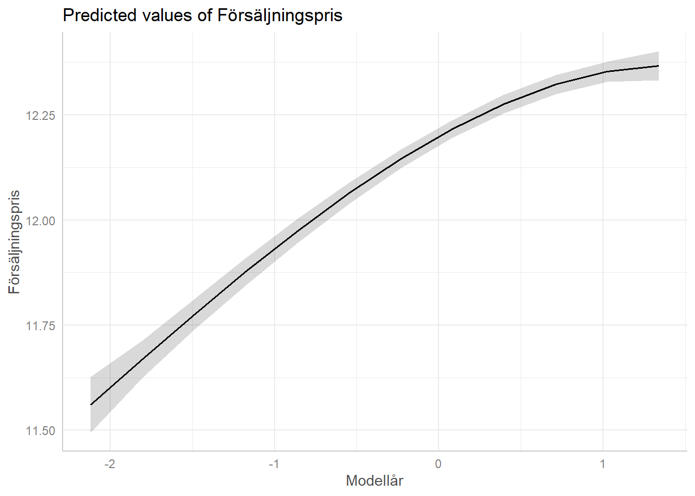
ggpredict(model, 'Miltal') |> plot()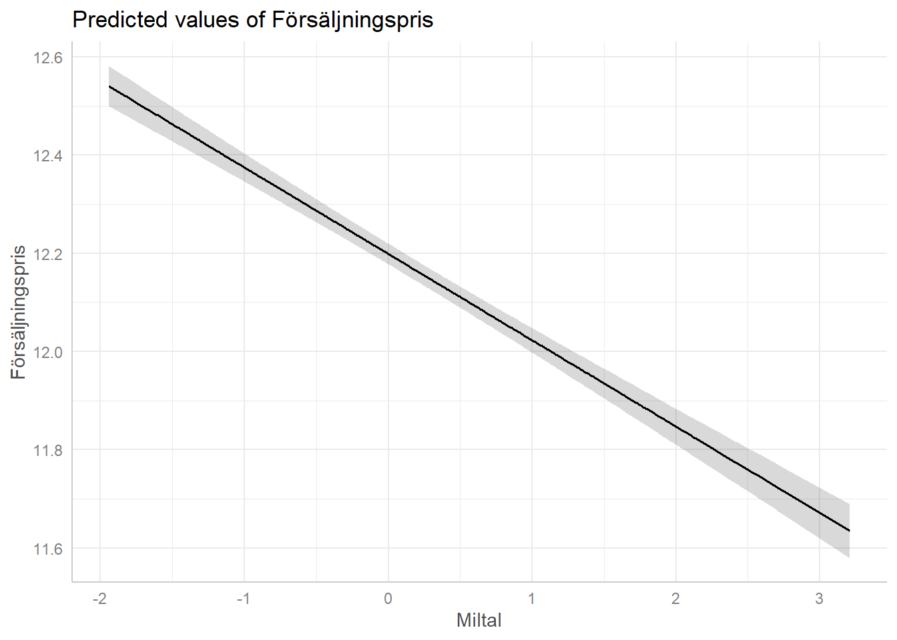
ggpredict(model, 'Hästkrafter') |> plot()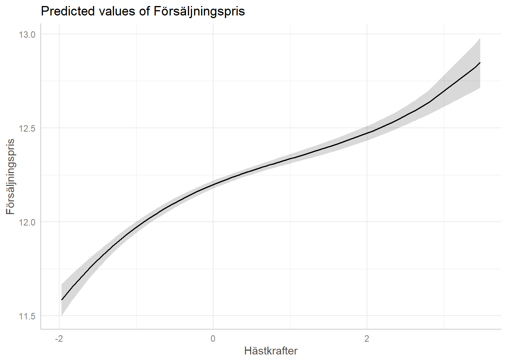
ggpredict(model, 'Växellåda') |> plot()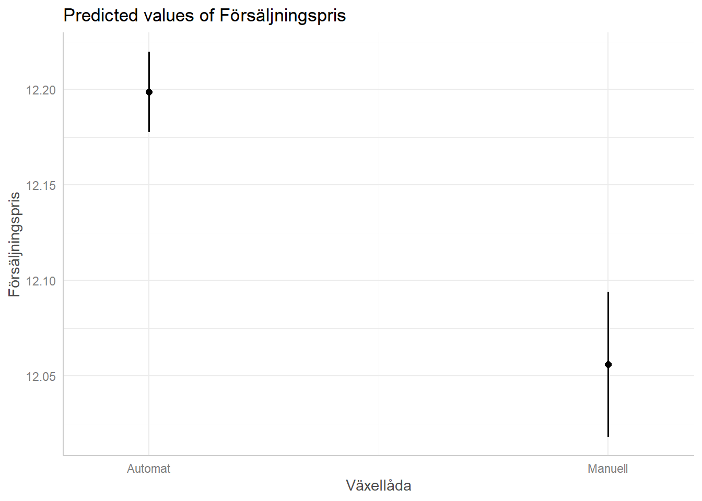
)
Prediction
Now we turn to checking the performance of the model. For this, we need to apply the same transformations to the validation- and test sets as we did for the training set. We’ll use the recipes library for this.
n <- nrow(df)
train_idx <- 1:floor(train_frac * n)
val_idx <- (max(train_idx) + 1):(max(train_idx) + floor(val_frac * n))
test_idx <- setdiff(1:n, c(train_idx, val_idx))
train_set <- df[train_idx, ]
val_set <- df[val_idx, ]
train_val_set <- bind_rows(train_set,val_set)
test_set <- df[test_idx, ]
train_set <- train_set |>
filter(
Försäljningspris < 500000 &
Försäljningspris != 31900 &
Modellår > 2010 &
Miltal < 30000
)
train_val_set <- train_val_set |>
filter(
Försäljningspris < 500000 &
Försäljningspris != 31900 &
Modellår > 2010 &
Miltal < 30000
)Define the recipe.
rec <- recipe(Försäljningspris ~ Modellår+`Hästkrafter (HK)`+Växellåda+Miltal,data=train_set) |>
step_log(Försäljningspris,base = exp(1)) |>
step_ns(Modellår, deg_free = 3) |>
step_ns(`Hästkrafter (HK)`,deg_free = 3) |>
step_normalize(all_numeric_predictors()) |>
step_dummy(all_nominal_predictors())Prepare the recipe
rec_prep <- prep(rec,training = train_set)Bake.
train_baked <- bake(rec_prep, new_data = train_set)
val_baked <- bake(rec_prep,new_data = val_set)model <- lm(Försäljningspris ~ ., data = train_baked)
preds <- exp(predict(model, newdata = val_baked))
actual <- exp(val_baked$Försäljningspris)
rmse <- sqrt(mean((actual - preds)^2))
print(glue('RMSE: {round(rmse, 2)}'))RMSE: 33307.78print(glue('RMSE naive: {round(sqrt(mean((actual-mean(actual))^2)),2)}'))RMSE naive: 100669.96print(glue('RMSE/Mean price: {round(rmse/mean(actual),2)}'))RMSE/Mean price: 0.2This is a pretty nice result. As compared to the most basic model of simply predicting the mean, we get an almost 70% reduction in uncertainty about the prediction using this linear model. Since we saw that Miltal and Modellår were highly correlated, let’s now do the same analysis when excluding Miltal.
rec <- recipe(Försäljningspris ~ Modellår+`Hästkrafter (HK)`+Växellåda,data=train_set) |>
step_log(Försäljningspris,base = exp(1)) |>
step_ns(Modellår, deg_free = 3) |>
step_ns(`Hästkrafter (HK)`,deg_free = 3) |>
step_normalize(all_numeric_predictors()) |>
step_dummy(all_nominal_predictors())rec_prep <- prep(rec,training = train_set)train_baked <- bake(rec_prep, new_data = train_set)
val_baked <- bake(rec_prep,new_data = val_set)model <- lm(Försäljningspris ~ ., data = train_baked)
preds <- exp(predict(model, newdata = val_baked))
actual <- exp(val_baked$Försäljningspris)
rmse <- sqrt(mean((actual - preds)^2))
print(glue('RMSE: {round(rmse, 2)}'))RMSE: 40644.03print(glue('RMSE/Mean price: {round(rmse/mean(actual),2)}'))RMSE/Mean price: 0.24We see that Miltal does help with the predictions even though it’s highly correlated with Modellår, so the model to choose is the one with Miltal. We now use the test set to get an unbiased estimate of model generalization.
rec <- recipe(Försäljningspris ~ Modellår+`Hästkrafter (HK)`+Växellåda+Miltal,data=train_val_set) |>
step_log(Försäljningspris,base = exp(1)) |>
step_ns(Modellår, deg_free = 3) |>
step_ns(`Hästkrafter (HK)`,deg_free = 3) |>
step_normalize(all_numeric_predictors()) |>
step_dummy(all_nominal_predictors())
rec_prep <- prep(rec,training = train_set)
train_val_baked <- bake(rec_prep, new_data = train_val_set)
test_baked <- bake(rec_prep, new_data = test_set)
model <- lm(Försäljningspris ~ ., data = train_val_baked)
preds <- exp(predict(model, newdata = test_baked))
actual <- exp(test_baked$Försäljningspris)
rmse <- sqrt(mean((actual - preds)^2))
print(glue('RMSE: {round(rmse, 2)}'))RMSE: 38149.55print(glue('RMSE/Mean price: {round(rmse/mean(actual),2)}'))RMSE/Mean price: 0.2Let’s now calculate robust prediction intervals by performing the following:
bootstrap sample remaining training dataset 1000 times and train a linear model for each
bootstrap sample.
Have every trained model predict the test set.
Record the mean prediction and actual response for every observation in the test set
Calculate the prediction interval lower and upper bounds and relative interval width
plot the actual response values against the mean predictions with relative interval width as a ribbon
Plot the response actual values against the relative interval widths
formula <- Försäljningspris ~ .
plot_prediction_intervals(train_val_baked, test_baked, formula)$data
# A tibble: 180 × 5
actual_y mean_prediction lower_pi_bound upper_pi_bound relative_interval_wi…¹
<dbl> <dbl> <dbl> <dbl> <dbl>
1 129000 129407. 89455. 190491. 0.781
2 259900. 266699. 192387. 395969. 0.763
3 299900. 243323. 172465. 363220. 0.784
4 55000. 39871. 27814. 59696. 0.800
5 53500 48979. 34969. 72532. 0.767
6 218800 253789. 173560. 383689. 0.828
7 259800 288965. 204927. 413677. 0.722
8 55000. 94876. 69167. 138827. 0.734
9 249900. 266965. 189503. 374229. 0.692
10 144000. 87379. 60479. 126758. 0.759
# ℹ 170 more rows
# ℹ abbreviated name: ¹relative_interval_width
$mean_pi_width
[1] 0.749491
$pi_plot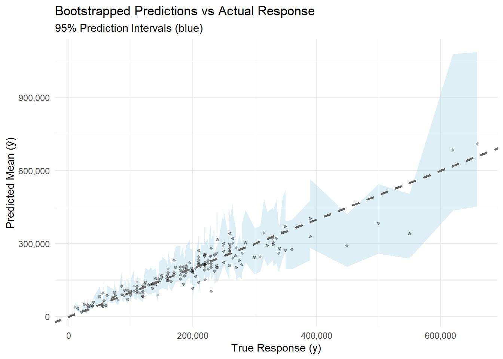
$pi_width_plot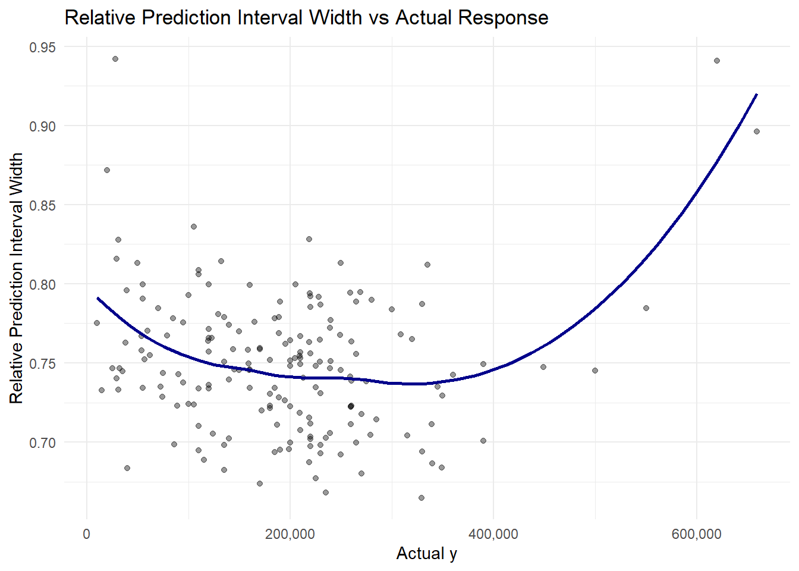
The plots show that the prediction intervals are tighter for lower price ranges, suggesting the model is bad at predicting the price in higher price ranges. This is due to the fact that we have restricted the training data to prices < 500 000. Had we removed the higher price ranges from the test data, we would probably see a different result. We choose not to do this since predictions are all about generalization.
As a point of comparison, and to illustrate the power of a carefully crafted linear regression model, we throw the dataset at a highly complex model (xgboostregressor) and evaluate it on the test set.
# Create model matrix and response
formula <- Försäljningspris ~ Miltal+Modellår+Växellåda+`Hästkrafter (HK)` -1
X_train <- model.matrix(
formula,
data = train_val_set
)
y_train <- train_val_set$Försäljningspris
# For each factor column, reapply the training levels to val/test
factor_vars <- names(Filter(is.factor, train_val_set))
for (col in factor_vars) {
val_set[[col]] <- factor(val_set[[col]], levels = levels(train_val_set[[col]]))
test_set[[col]] <- factor(test_set[[col]], levels = levels(train_val_set[[col]]))
}
X_test <- model.matrix(
formula,
data = test_set
)
y_test <- test_set$Försäljningspris
xgb_model <- xgboost(
data = X_train,
label = y_train,
nrounds = 100,
objective = "reg:squarederror",
verbose = 0
)
preds <- predict(xgb_model, newdata = X_test)
actual <- y_test
rmse <- sqrt(mean((actual - preds)^2))
print(glue('RMSE: {round(rmse, 2)}'))RMSE: 43651.12print(glue('RMSE/Mean price: {round(rmse/mean(actual),2)}'))RMSE/Mean price: 0.23As can be seen, the xgboost regressor actually performs slightly worse on the test set. But what if we give the xgboost regressor full access to all the predictors? Will we then see a dramatic improvement?
formula <- Försäljningspris ~ . -1
X_train <- model.matrix(
formula,
data = train_val_set
)
y_train <- train_val_set$Försäljningspris
# For each factor column, reapply the training levels to val/test
factor_vars <- names(Filter(is.factor, train_val_set))
for (col in factor_vars) {
val_set[[col]] <- factor(val_set[[col]], levels = levels(train_val_set[[col]]))
test_set[[col]] <- factor(test_set[[col]], levels = levels(train_val_set[[col]]))
}
X_test <- model.matrix(
formula,
data = test_set
)
y_test <- test_set$Försäljningspris
xgb_model <- xgboost(
data = X_train,
label = y_train,
nrounds = 100,
objective = "reg:squarederror",
verbose = 0
)
preds <- predict(xgb_model, newdata = X_test)
actual <- y_test
rmse <- sqrt(mean((actual - preds)^2))
print(glue('RMSE: {round(rmse, 2)}'))RMSE: 36089.65print(glue('RMSE/Mean price: {round(rmse/mean(actual),2)}'))RMSE/Mean price: 0.19The xgboost regressor only performs slightly better than the linear model. Nota bene that such a complex model is essentially a blackbox and we can’t really make any inferences. With linear regression on the other hand, we can say exactly which predictors contribute and by how much, making the simpler model superior in this case.